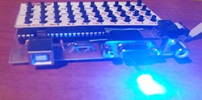

Cesky: |
ATX-80
ZX-80 computer clone with ATmega8 processor
Last update: 12/15/2021
ATX-80 on GitHub: https://github.com/Panda381/ATX80
The ATX-80 is a microcomputer derived from the ZX-80, with an ATmega8 processor. It does not emulate code, but replaces the original computer with custom code with similar functionality in AVR assembly. It allows output of the video to a VGA monitor or to a PAL/NTSC television. BASIC programs can be stored in internal EEPROM, internal Flash or external EEPROM memory (32 memory slots) and also transferred between PC and memory. The advantages are easy construction and small size. It can be used as a small inexpensive computer for teaching basic BASIC programming. Includes 32 sample programs.
Contents
The original intent of the project was to create a computer with similar features and technical limitations as the original ZX-80. That is, a fully functional BASIC interpreter with only 1 KB of RAM and as close to 4 KB of ROM as possible. The project was also conceived as a study of the original ZX-80 BIOS ROM. It must be admitted that the original ZX-80 BIOS was an admirable creation. In addition to being very innovative, it was created with a high optimization of code size, and although this required a considerable amount of clarity in the flow of data between functions, the author maintained an overview of the code with minimal errors. I have tried to keep the functionality of the original code as accurate as possible and commented my code in detail, which can be a useful addition to explain the BIOS functionality. The ZX-80 BIOS is a very useful and informative study material and, despite its age, deserves more attention as an admirable work.
The ATmega8 processor was chosen to rewrite the code, which has 1 KB of RAM (the same limitation as the ZX-80) and 8 KB of Flash memory. Although the Flash memory is more than the original 4 KB, the code was about 40% longer after rewriting (AVR instructions are 16-bit) and additional functions were added, such as a more complex video generator, memory handling, 1 KB of internal Flash was used as a memory slot to store programs, so the 8 KB of memory was used efficiently.
The ATX-80 includes a keyboard of 40 micro switches. It can generate video for VGA monitor and also video in PAL and NTSC television standard via Cinch connector. It is powered by an external +5V source via USB connector (USB charger or computer connector). An external 32 KB EEPROM memory is used to store user BASIC programs, allowing 32 programs to be stored in 32 memory slots. In addition to the external EEPROM memory, one internal memory slot in the processor's Flash memory can be used to copy programs between different external EEPROM memories. The edited program is also automatically mirrored in the internal EEPROM memory. The internal EEPROM has a size of only 512 bytes, so some programs do not fit in it completely, but most programs are no larger than 512 bytes (RAM must be shared with variables and video memory) and for longer programs at least a larger part is backed up.
Advantages of the ATX-80 over the original ZX-80:
Limitations of the ATX-80 compared to the original ZX-80:
While studying the ZX-80 BIOS I came across a few minor bugs.
1) REM command error. The address of the REM routine should be L0849 instead of L084A. The error causes that giving the REM command without parameters (no text) will not execute the next line.
2) Error in the ED-EDIT routine - the following instructions should be in reverse order. The error can cause the computer to crash when writing a command when memory is full.
JR NC,L03A7 ; back to ED-COPY if not enough ; room to fill edit line. POP HL ; restore program position.
3) The following error, although not apparent, is a potential risk when changing the compilation. At the beginning of the L03CB ED-EDIT routine, the initialization of register B to a value representing the number of lines to print is missing (a number of 2 or higher is needed). At this point, register B contains a value of 3 (derived from address L03CB), which is suitable, but recompiling from a different address could cause the bottom screen to stop printing. However, it is possible that the author deliberately omitted this instruction there, as part of the optimization.
The main processor is ATmega8. If necessary, it can be replaced by ATmega88, ATmega168 or ATmega328 processors, which are pin compatible. A different firmware code must be used, which is also provided in the download package. However, the larger memory of the higher processor types is not used.
The processor is driven by a 24 MHz crystal. This frequency is necessary to display the required resolution on a VGA monitor. Although the frequency of the crystal used lies above the limits declared by the manufacturer, in practice it has been found that practically all processors can handle such overclocking fine. Still, it is advisable to use a socket for the processor and try another piece of the processor in case of difficulties. Insufficient supply voltage may also be the cause of malfunction. The cutoff frequency of the processor is dependent on the power supply, a low supply voltage may cause the processor to not work properly with the crystal used.
The keyboard is wired in a 5x8 key matrix, with similar wiring to the original ZX-80, just with reverse current flow. When scanning the keyboard, signals COL1 to COL5 are wired as input (i.e., high impedance state) and only one of the COL signals is set as output with the LOW level. Signals ROW1 to ROW8 are connected as input with an internal pull-up resistor. When the keypad is scanned, one of the COL signals is activated to LOW level and the reading of the ROW signals detects the key pressed.
The MOSI output from the SPI generator is routed as a video signal to both the VGA connector and the CINCH connector for output to the TV. The output is assumed to be loaded with a 75 ohm input resistor, which will provide the required voltage level of 0.7V. The SYNC signal is the output from Timer1, which provides horizontal synchronization. Timer1 simultaneously triggers an interrupt to the video generator, which sends the video data through the SPI controller.
The VSYNC signal is only used in "old VGA display" mode. Otherwise, a CSYNC sync mix is normally generated at the SYNC output. The vertical signal is created in the sync mix by negating the horizontal sync signal. Most current VGA monitors support sync mix and work well in this mode. Only older VGA monitors require the use of a VSYNC signal as well. For most monitors, no difference between old/new VGA monitor modes should normally be observed.
The external EEPROM memory is connected via the TWI/I2C signals (SDA and SCL). A 32 KB 24LC256P memory is recommended as the most suitable type, which can hold 32 user programs (32 slots, where each slot is 1 KB in size). In addition to this, 24LC32 (4KB, i.e. 4 slots), 24LC64 (8 KB, i.e. 8 slots), 24LC128 (16 KB, i.e. 16 slots) and 24LC512 (64 KB, i.e. 64 slots) can also be used. The memories differ only in the number of available memory slots.
It is advisable to use a socket for the EEPROM memory so that it can be replaced with another one with different stored programs if necessary. Programs can be copied between memories using both the slot in the internal Flash memory and the included copy utility.
The EEPROM memories used contain a write-protect input pin. The ATX-80 does not provide for this, but a configuration jumper can be added to the board to enable or disable writing to the EEPROM memory and thus protect its contents against unwanted overwriting.
Note: The ATX-80 does not recognize the size of the attached EEPROM memory. It is up to the user to use the correct slot number. If you use a slot number outside the memory range, the slot number will be overwritten by modulo operations to another slot (EEPROM ignores unused higher address bits) and may inadvertently overwrite another stored program. For example, writing to slot 34 in a 32 KB memory will write to slot 2.
Note 2: It is assumed that the same hardware will be used for the planned ZX-81 clone, but a different processor with larger memory (probably ATmega328) will be used. Therefore, use a socket for the processor to make it easily replaceable.
The ATX-80 is designed for a 100x75 mm single-sided PCB - partly because of the limitations of the freeware version of the Eagle editor, and partly because this is one of the dimensions of commonly sold photo-etch PCBs. I produce the PCB by printing the master in an inkjet printer on transparent film (gluing 2 printed master with adhesive for better coverage), illuminating with UV-LED field (10 minutes from a distance of 30 cm), exposing in potassium hydroxide and etching in ferric chloride.
Please note that in case of customised PCB production, it is necessary to check the definitions of the hole diameters in the template (I drilled the holes myself and therefore not verified).
Bottom side of the PCB
Top side of PCB, can be replaced by wire jumpers
Printing
Assembly of components. Use a socket for the processor and EEPROM.
Mounted board
A sticker with button labels is folded over the buttons. I printed it on regular paper on an inkjet printer, covered both sides with adhesive and then punched holes for the buttons with a 4 mm cut-out.
The whole assembly
Set the fuses as follows:
ATmega8: low 0xEF (default 0xE1), high 0xC7
(default 0xD9)
ATmega88: low 0xF7 (default 0x62), high 0xD7 (default 0xDF), ext
0xFF (default 0xF9)
ATmega168: low 0xF7 (default 0x62), high 0xD7 (default 0xDF), ext
0xFF (default 0xF9)
ATmega328: low 0xF7 (default 0x62), high 0xD7 (default 0xD9), ext
0xFF (default 0xFF)
The fuses are set to map the boot loader to the smallest memory size (needed for writing to the internal flash memory), protect the internal EEPROM during programming, and fast external crystal.
If you connect a VGA monitor after programming the processor, you should see a basic white screen with a "K" cursor in the lower left corner. If this does not happen, a video mode other than the default VGA may be selected. To switch the video mode, hold down any of the buttons 1 through 4 on the keyboard while turning on the power:
The selected configuration is stored in the last byte of the EEPROM memory for future use. If the video mode cannot be switched, you may have a short circuit on one of the buttons.
Be careful not to use the above operation to set the vieomode on a processor with a copy utility. It could inadvertently activate the programming of the external EEPROM.
You can check whether the processor is working without connecting the display. Insert the LED into the VGA connector between pins 14 (anode, long plus pin) and 10 (cathode, shorter minus pin). If you turn on video mode 1 (the old VGA monitor), the LED will light up (VSYNC signal is active), the LED will not light up for other video modes. Or you can plug the LED into the CINCH connector (anode to the pinhole, cathode to the shell) - if an image is being generated, the LED will light.
Uploading programs to EEPROM
After testing the basic functionality of the ATX-80, I recommend programming the connected external EEPROM memory. In the attachment you will find a set of utilities to load a set of 32 sample programs into the EEPROM. This requires either reprogramming the main processor or using another processor as a "copier".
In the utilities package there is a folder ATX80_Import, where you can find firmware (BIN files) for the copy processor, prepared for ATmega8/88/168/328 processors (the first number in the BIN file name indicates the processor). There are 3 sets of programs for each type of processor: slot 1 to 12, slot 13 to 24 and slot 25 to 32. The contents of the programs can be found in the utility package in the files Programs_1.txt, Programs_2.txt and Programs_3.txt. Alternatively, the program descriptions can be found in the Programs.txt file in the ATX-80 source code package.
The copy program does not use a display, but only an indicator LED to save memory. Insert it into the VGA connector on the VSYNC signal, between pins 14 (anode, long plus pin) and 10 (cathode, shorter minus pin).

Load the *_1.bin program with the first set of sample programs into the processor. The LED will flash rapidly to indicate that the processor is in a standby state. If you now press button 4 on the keypad, the LED will light steadily for a few seconds to indicate that EEPROM programming is in progress. It will then flash again quickly to indicate that the operation has been completed. Load the other 2 sets of sample programs in this manner one at a time. The button must be pressed for at least half a second to be registered - the LED must light up for at least 1 second.
Copying programs between EEPROMs
The program set in the utility package is also used to download or copy programs from the external EEPROM memory. Use the following procedure to copy the contents of the EEPROM to another memory.
Load the program from the ATX80_Copy folder for the corresponding processor into the processor. The LED will flash to indicate readiness. Press any of the buttons 1 through 3. The LED will light momentarily to indicate an operation in progress, and the programs from the EEPROM will be downloaded to the processor's internal Flash memory. The button determines which slots are downloaded. Button 1 downloads slots 1 through 11, button 2 downloads slots 12 through 22, and button 3 downloads slots 23 through 32. Theoretically, the ATmega8 may not fit 11 slots - they would mean 11 KB of memory, but the ATmega8 has only 8 KB. In practice, most programs are smaller so they can fit into 8 KB. If sometimes they don't, you would need to use a processor with more memory or adjust the slot counts in the copy program source code.
After downloading the programs to the processor, turn off the power, replace the EEPROM memory, and turn on the power. Press button 4 to save the loaded programs from Flash memory to the new external EEPROM memory. All programs that are in memory are saved and stored in the same slots from which they were downloaded.
Download programs from EEPROM
You can also download programs to your PC using utilities. First, as in the previous case, download the appropriate set of programs to the processor's Flash memory (using buttons 1 to 3). Connect the CPU programmer and download the CPU Flash memory to the ATX80_Copy folder, to files named 1.bin to 3.bin. In the ATX80_Export folder, run the command file !.bat. This will export the programs from the downloaded Flash memory images to the text files Programs_1.txt through Programs_3.txt in the base utilities folder. Within the files, you can edit the downloaded files in text form. Each program code is prefixed with a "SLOT x" to indicate which slot the program belongs to. The label indicates the start of the program for further processing. All subsequent lines starting with a number are processed as program lines. Program lines may be followed by LET or DIM statements containing the filling of numeric or text variables.
If you wish to load programs in text form back into EEPROM, run the !.bat command file in the ATX80_Import folder. This will ensure that the programs from the text form are imported back into the copy program images. Then all you have to do is load the programs into the processor and press button 4 to save them to the external EEPROM, just as described at the beginning of this chapter.
The ATX-80 BASIC is almost completely identical to the ZX-80 BASIC, except for a few small differences.
The program line number can range from 1 to 9999. After each change in program lines, the program is automatically backed up to the internal EEPROM. The internal EEPROM has a capacity of only 510 bytes and therefore may not hold the entire program. When the ATX-80 is turned on, the program stored in the internal EEPROM is restored.
The BASIC ATX-80 operates with integers in the range -32768 to +32767. Variables can be of the following types:
Operations:
Commands, they can be only at the beginning of the line or after the THEN command, they are called by pressing a letter:
Functions and other commands (functions must be written in text, they do not have a keyboard shortcut):
Sample programs are stored in the external EEPROM in slots 1 to 32. The contents of the EEPROM can be copied to another EEPROM, downloaded to the PC, or loaded from the PC into the EEPROM as described in the EEPROM Programming chapter.
The contents of the programs can be found in the Programs.txt file in the source code, along with their detailed descriptions.
1) Print charset
2) High precision division
3) Square root routine
4) Die throwing
5) Reaction timer
6) Histogram of random number
7) Leap frog
8) Message encoding
9) Horse Race
10) Lunar Lander (run with GO TO 100)
11) Maze generator
12) Noughts and Crosses (Tic Tac Toe)
13) Dr. ATX80 - psycho therapist (run with GO TO 120)
14) NIM game (taking matches)
15) Blackjack
16) Bubble sort
17) Line renumber (run with GO TO 9987)
18) Draw a picture (restore saved picture with GO TO 200)
19) Calculate day of the week
20) Chinese remainder
21) Simple Simon - write letters
22) Hangman - guess letters
23) Maths drill - learn addition and subtraction
24) Learn capitals of the World
25) Life - cellular automaton
26) Prime number generator
27) Simultaneous equations
28) Square root to 3 decimal places
29) Pontoon (cards)
30) Chomp (game - take grid)
31) Mastermind (game - guess digits)
32) Pinch (game - capture oponent)
Total price (without PCB): 285 Kc
Miroslav Nemecek
Panda38@seznam.cz
{kind=link}
{kind=link}
{kind=link}
{kind=link}
{kind=link}
{kind=link}
{kind=link}
{kind=link}
{kind=link}
{kind=link}
{kind=link}
{kind=link}
{kind=link}
{kind=link}
{kind=link}
{kind=link}
{kind=link}
{kind=link}
{kind=link}
{kind=link}
{kind=link}
{kind=link}
{kind=link}
{kind=link}
{kind=link}
{kind=link}
{kind=link}
{kind=link}
{kind=link}
{kind=link}
{kind=link}
{kind=link}
{kind=link}
{kind=link}
{kind=link}
{kind=link}
{kind=link}
{kind=link}
{kind=link}
{kind=link}
{kind=link}
{kind=link}
{kind=link}
{kind=link}
{kind=link}